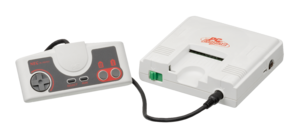
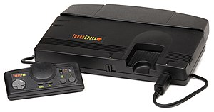
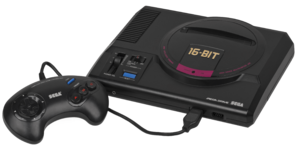
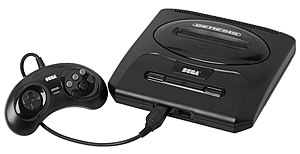
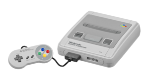
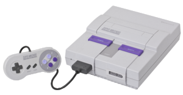
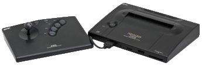

| Name
|
TurboGrafx-16
|
Mega Drive/Genesis
|
Super NES
|
Neo Geo
|
| Manufacturer
|
NEC , Hudson Soft
|
Sega
|
Nintendo
|
SNK
|
| Console
|


|


|


|

|
| Launch prices (USD)
|
US$199.99 (equivalent to $404 in 2018)
|
US$189.99 (equivalent to $384 in 2018)
|
US$199.99 (equivalent to $368 in 2018)
|
US$649.99 (Gold version) (equivalent to $1,196 in 2018)
US$399.99 (Silver version) (equivalent to $736 in 2018)
|
| Release date
|
- JP : October 30, 1987
- NA : August 29, 1989
- EU : 1990
|
- JP : October 29, 1988
- NA : August 14, 1989
- EU : November 30, 1990
|
- JP : November 21, 1990
- NA : August 23, 1991
- EU : April 11, 1992
|
- JP : June 18, 1991
- NA : June 18, 1991
- EU : 1991
|
| Media
|
- HuCard (card-shaped cartridge)
- CD-ROM ( Turbo CD add-on)
|
- Cartridge
- CD-ROM ( Sega CD add-on)
- Data card (Power Base Converter add-on)
|
|
- Cartridge
- Data card (Japan/Europe)
|
| Best-selling games
|
Bonk's Adventure
|
Sonic the Hedgehog (15 million)
|
Super Mario World , 20 million (as of June 25, 2007)
|
Samurai Shodown (video game)
|
| Backward compatibility
|
N/A
|
Master System (using Power Base Converter )
|
Nintendo Entertainment System (unlicensed, using Super 8 )
Game Boy (using Super Game Boy )
|
N/A
|
| Accessories (retail)
|
- TurboGrafx-CD (1988)
- System Card (1988)
- Super System Card (1991)
- Arcade Card (1994)
- TurboTap (1987)
- TurboStick
- TurboBooster
- TurboBooster Plus
- PC Engine SuperGrafx (1989)
- TurboDuo (1991)
|
- Sega CD (1991)
- Sega CD Backup Ram carts (1992 JP) (1994 NA)
- Sega 32X (1994)
- Mouse
- Menacer (1992)
- Power Base Converter
- Sega Activator (1993)
- Multitap
|
- Super Scope
- Super NES Mouse (1992)
- Super Multitap (1993)
- Super Game Boy (1994)
- Super Advantage
|
- Neo Geo Controller Pro
- Neo Geo Memory Card
|
| CPU
|
- Hudson Soft HuC6280 A (based on 8-bit 65SC02 )
1.79 MHz (0.77 MIPS ) or 7.16 MHz (3.08 MIPS)
|
- Motorola 68000 (16/32-bit CISC )
7.67 MHz (7.61 MHz PAL) (1.4 MIPS)
- Zilog Z80 (8/16-bit)
3.58 MHz (0.52 MIPS)
Add-ons:
- CD: Motorola 68000 @ 12.5 MHz (2.19 MIPS)
- 32X: 2× Hitachi SH-2 ( 32-bit RISC ) @ 23 MHz (60 MIPS)
|
- Nintendo custom Ricoh 5A22 (based on 16-bit 65C816 )
3.58 MHz (3.55 MHz PAL) (1.5 MIPS)
SA-1 enhancement chip :
- Nintendo custom 65C816
10.74 MHz (4.5 MIPS)
|
- Motorola 68000 (16/32-bit CISC)
12 MHz (2.1 MIPS)
- Zilog Z80 (8/16-bit)
4 MHz (0.58 MIPS)
|
| GPU
|
- Hudson Soft HuC6260 Video Color Encoder (16-bit)
- Hudson Soft HuC6270 A Video Display Controller (16-bit)
SuperGrafx:
- HuC6260
- 2× HuC6270A
- HuC6202 Video Priority Controller
|
- Yamaha YM7101 VDP (Video Display Processor)
Upgrades:
- SVP chip : Samsung SSP1601 DSP @ 23 MHz (25 MIPS) (1994)
- CD add-on: Sega ASIC coprocessor
- 32x add-on: Sega 32x VDP (Sega Custom LSI) @ 23 MHz
|
- Ricoh PPU1 (Picture Processing Unit 1)
- Ricoh PPU2 (Picture Processing Unit 2)
Enhancement chips :
- DSP : NEC µPD77C25 @ 8 MHz (1990)
- Super FX : 10.5 MHz (10 MIPS) (1993)
- Capcom Cx4 ( Hitachi HG51B169 DSP) (1994)
- Super FX 2 : 21.477 MHz (21 MIPS) (1995)
|
- SNK LSPC2-A2 (line sprite generator & VRAM interface)
- SNK PRO-B0 (palette arbiter)
|
| Sound chip(s)
|
CD add-on:
|
- Yamaha YM2612
- Yamaha VDP PSG ( SN76496 )
Add-ons:
- CD: Ricoh RF5c164
- 32X: Q-Sound
|
Sony APU (Audio Processing Unit)
- S-SMP (8-bit Sony SPC700)
- S-DSP (16-bit DSP)
|
Yamaha YM2610
|
| RAM
|
- 8 KB main RAM
- 64 KB video RAM
Upgrades:
- CD add-on: 64 KB main DRAM, 64 KB audio DRAM
- Super System Card add-on: 64 KB DRAM, 192 KB SRAM
- Super CD add-on: 256 KB SRAM, 64 KB DRAM, 2 KB Back-up SRAM
- Arcade Duo Card add-on: 2048 KB FPM DRAM , 192 KB SRAM
- Arcade Pro Card add-on: 2240 KB+192 kB
- SuperGrafx: 32 KB main, 128 KB video RAM
- Duo: 256 KB SRAM, 64 KB Video RAM, 8 KB Work Ram
|
- 64 KB main PSRAM
- 64 KB video DRAM
- 8 KB audio SRAM
Upgrades:
- SVP chip: 128 KB DRAM, 2 KB cache , 1 KB DSP RAM
- CD add-on: 512 KB main, 256 KB Video, 64 KB Audio, 16 KB cache, 8 KB Internal Back-up
- CD BackUp Ram Carts: 8 KB to 512 KB
- 32X add-on: 256 KB main RAM, 256 KB video RAM
|
- 128 KB main DRAM
- 64 KB video SRAM
- 64 KB audio PSRAM
Enhancement chips:
- SA-1: 2 KB RAM
- Super FX: 32 to 128 KB SRAM
- Super FX 2: 64 to 128 KB SRAM
|
- 64 KB main SRAM
- 74 KB video SRAM
- 2 KB audio SRAM
|
| Video
|
- Resolution : 256×224 to 565×242 ( progressive ), 256×448 to 565×484 ( interlaced )
- Sprites : 64 on screen, 16 per scanline , 16×16 to 32×64 sizes, 16 colors per sprite, sprite flipping
- Tilemap : 1 scrolling background with line scroll effect
- Colors on screen: 482 (241 for backgrounds, 241 for sprites)
- Color palette : 512 ( 9-bit color )
Upgrades:
- CD add-on: Full motion video (FMV)
- SuperGrafx: 128 sprites on screen, 32 sprites per scanline, 2 sprite layers, 2 parallax scrolling tilemap backgrounds, 512 colors on screen
|
- Resolution: 256×224 to 320×240 (progressive), 320×448 to 320×480 (interlaced)
- Sprites: 80 on screen, 20 per scanline, 8×8 to 32×32 sizes, 16 colors per sprite, [59] integer sprite zoom, sprite flipping
- Tilemaps : 2 parallax scrolling planes with line & row scroll effects and tile flipping
- Colors on screen: 64 to 75 (standard), 192 (shadow/highlight), 512 (160×224 resolution)
- Color palette: 512 (standard), 1536 (shadow/highlight)
Upgrades:
- SVP enhancement chip: 3,000 texture mapping polygons/sec, 20,000 flat shading polygons/sec
- CD add-on: Sprite/tilemap scaling & rotation , FMV with 128–256 on-screen colors
- 32X add-on: Color palette: 32,768 ( 15-bit high color ), 256–32,768 colors on screen, 40,000 Texture Gouraud Shading polygons/sec, 50,000 texture mapping polygons/sec, 100,000 Gouraud Shading polygons/sec, 160,000 flat shading polygons/sec
|
- Resolution: 256×224 to 256×239 (progressive), 512×448 to 512×478 (interlaced)
- Sprites: 128 on screen, 32 per scanline, 8×8 to 64×64 sizes, 16 colors per sprite, sprite flipping
- Tilemaps: 2–4 parallax scrolling planes (lo-res), or 1–2 scrolling planes (hi-res), or 1 scaling/rotating plane ( Mode 7 )
- Colors on screen: 256 (1–3 lo-res planes), 128 (4 planes), 128 to 160 (hi-res)
- Color palette: 32,768 ( 15-bit high color )
Enhancement chips:
- Super FX: 2,000 flat shading polygons/sec, 1,000 texture mapping polygons/sec
- Super FX 2: 4,000 flat shading polygons/sec, 2,000 texture mapping polygons/sec
- Capcom Cx4: Sprite rotation/Calculations for wireframe effects
- DSP-1: Advance Scaling and Rotation via Mode 7
- DSP-2: Dynamic Scaling Capability and Transparency effects
- DSP-3: Bitstream decompression, and bitplane conversion of graphics
- DSP-4: Draw Distance
|
- Resolution: 320×224 to 384×264 (progressive)
- Sprites: 380 on screen, 96 per scanline, double line buffering , 16×16 to 16×512 sizes, 16 colors per sprite, sprite scaling , sprite flipping
- Tilemaps: 1 static plane, and optional 1–3 parallax scrolling planes with scaling and line & column scroll effects
- Colors on screen: 4096
- Color palette: 65,536 ( 16-bit high color )
|
| Audio
|
- Stereo audio with:
- 6 programmable WS channels/voices
- Square , sine , sawtooth , triangle and other waveforms
- White noise generation on 2 channels
- LFO or FM on 2 channels
- Optional streaming of samples through any channel
CD add-on:
- 1 ADPCM channel, 12-bit audio , 32.088 kHz sampling rate
- 1 streaming CD-DA channel, 16-bit CD audio, 44.1 kHz sampling rate
|
Stereo audio with:
- 6 FM synthesis channels/voices
- 3 square wave channels/voices
- Sine wave LFO
- 1 PCM channel, 8-bit samples , 8 to 22 kHz sampling rate
Upgrades:
- SVP chip: 2 PWM channels
- CD add-on: 8 PCM channels (16-bit, 32 kHz), 1 streaming CD-DA channel (16-bit, 44.1 kHz)
- 32X add-on: 10-bit PWM, surround sound
|
Stereo audio with:
- 8 ADPCM channels
- 16-bit audio , 32 kHz sampling rate
|
Stereo audio with:
- 4 FM synthesis channels/voices
- 3 square wave channels/voices
- 1 white noise generator
- 6 ADPCM channels (12-bit) @ 18.5 kHz sampling rate
- 1 ADPCM channel (16-bit) @ 1.8 to 55.5 kHz sampling rate
|